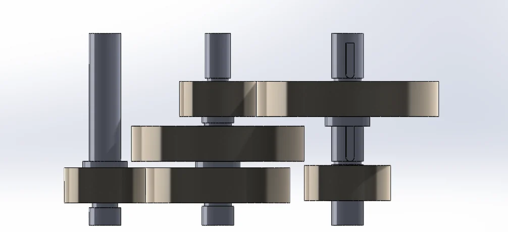
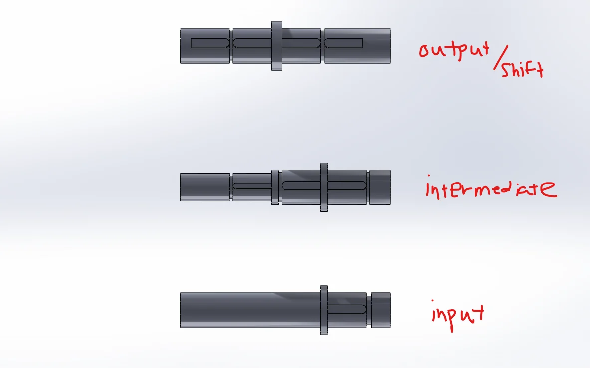
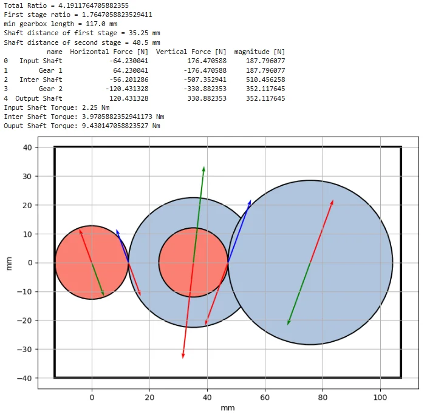
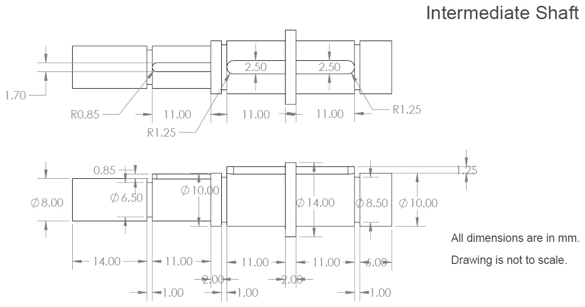
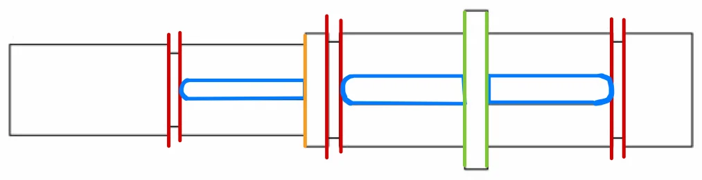
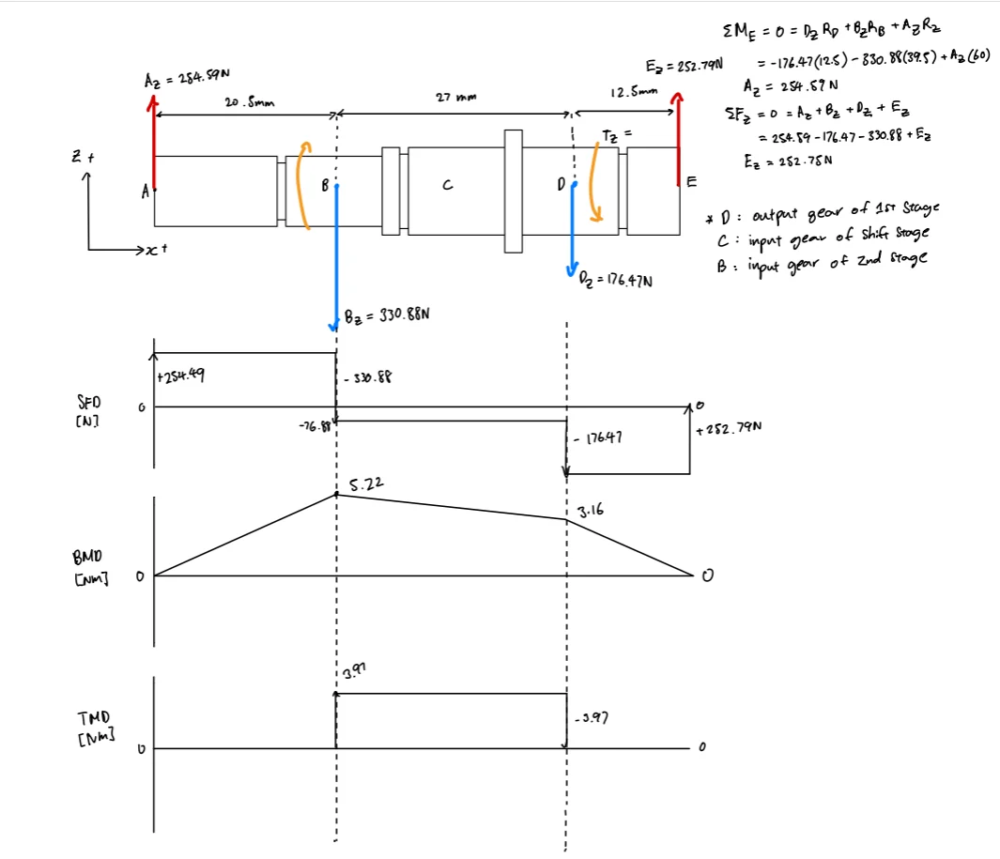
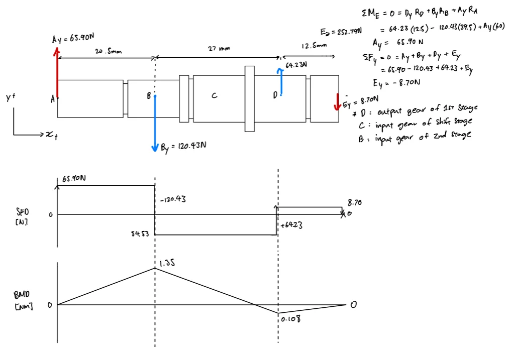
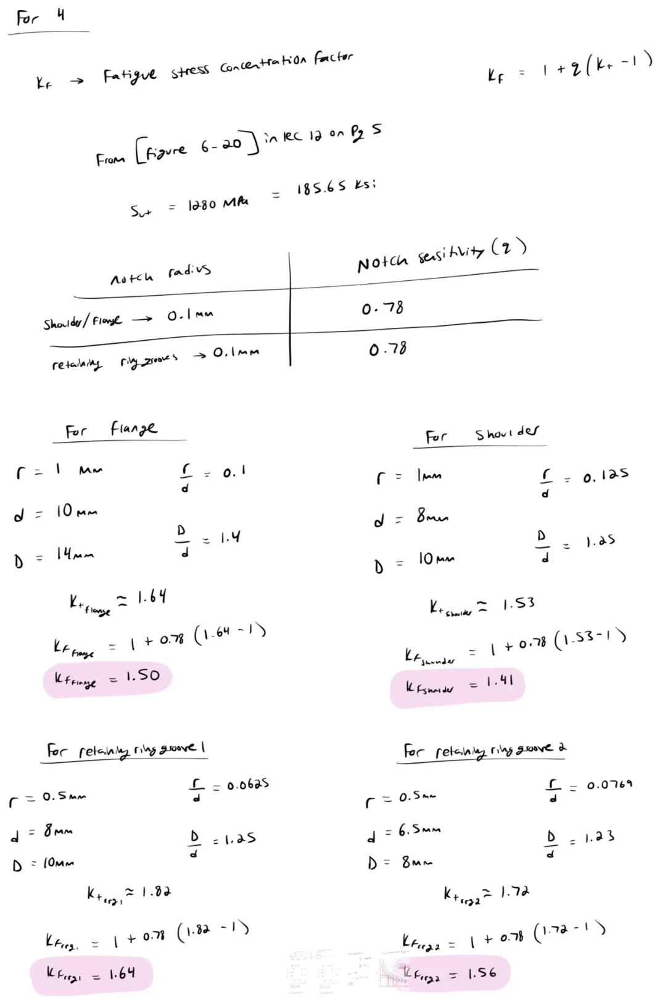

Force & torque analysis
Calculate external forces, reactions and torque on the gearbox shafts.
Project 02 · MECH 323 Machine Design · 2025
Verifying that every critical location on a three-shaft gearbox survives five years of continuous cyclic loading.
Team design project — Team 12, Phase 3. My individual contribution can be found further down the page.

The objective of this phase was to evaluate the gearbox shaft design under cyclic loading, and confirm that each critical location continued to have an acceptable fatigue safety factor.
The gearbox was assumed to run continuously for a five-year endurance race at a constant operating point, so every shaft feature had to survive very high-cycle loading. The shaft length was capped at 60 mm by the gearbox width and the shaft diameter was capped by the smallest pinion.
A fatigue safety factor above 1.0 at every keyway, shoulder, flange and retaining ring groove on all three shafts. Anything below that sends the design back for changes.
Calculate external forces, reactions and torque on the gearbox shafts.
Evaluate keyways, shoulders, flanges and retaining ring grooves where stress concentrations occur.
Determine fatigue behaviour under cyclic loading using material properties and the corrected endurance limits.
Calculate the factor of safety at critical shaft locations.
A selected set of the drawings, diagrams and calculations behind the final result.








All critical locations maintained a safety factor above 1.0.
The analysis confirmed that the shaft design met the fatigue safety requirements. At the same time, the analysis identified opportunities for optimization, particularly where the input shaft exhibited significantly higher safety factors than required.
| Shaft | Governing location | Minimum factor of safety |
|---|---|---|
| Input | Right flange | 8.06 |
| Intermediate | Right retaining ring groove 1 | 1.403 |
| Output | Left retaining ring groove 2 | 3.331 |
The governing shaft, which was shown as an example in the calculation set. The midrange torque and resultant amplitude moment were used to evaluate each location using the DE-Gerber criterion.
| Critical point | Midrange torque Tm (N·m) | Amplitude moment Ma (N·m) | Factor of safety |
|---|---|---|---|
| Left retaining ring groove 1 | 0 | 3.682 | 1.493 |
| Right retaining ring groove 1 | 0 | 3.945 | 1.403 |
| Shoulder | 3.97 | 4.915 | 2.441 |
| Left retaining ring groove 2 | 3.97 | 4.743 | 2.517 |
| Right retaining ring groove 2 | 3.97 | 4.658 | 2.361 |
| Left flange | 3.97 | 3.744 | 5.569 |
| Right flange | 3.97 | 3.664 | 5.678 |
| Left retaining ring groove 3 | 0 | 1.771 | 6.979 |
| Right retaining ring groove 3 | 0 | 1.518 | 8.142 |
The analysis did more than confirm that the design was safe. It identified an opportunity to reduce unnecessary material and improve efficiency without sacrificing durability.
Safety factors on the input shaft ran from 8.06 to 13.63, which were far above what the loading requires. That points directly at where the next design revision should remove material, while the intermediate shaft at 1.403 is the one location that has to be left alone.
My contribution
I was primarily responsible for the engineering calculations and analytical work throughout the project. This included developing and incorporating the required equations, calculating design values, and creating the tables used to present the results.
I also contributed to the development and refinement of the CAD design by reviewing the models and providing feedback and design suggestions to the team member who was responsible for the CAD work. Working together, we evaluated design changes to improve the overall functionality and presentation of the gearbox.
I strengthened my ability to translate engineering theory into calculations and design verification.
I learned the importance of presenting complex calculations and numerical results in a clear, organized way.
Reviewing the CAD model and contributing design suggestions reinforced the value of collaborative design review.